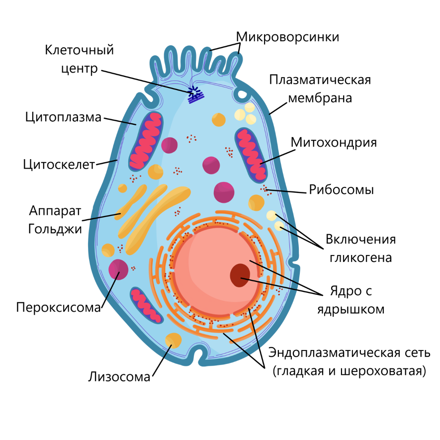
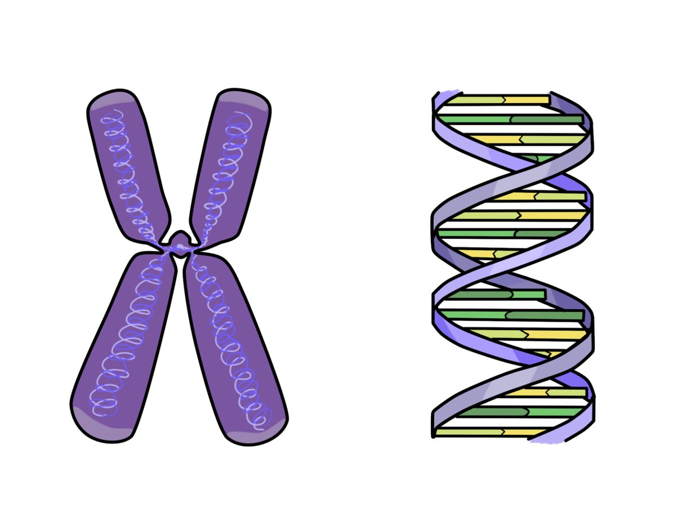
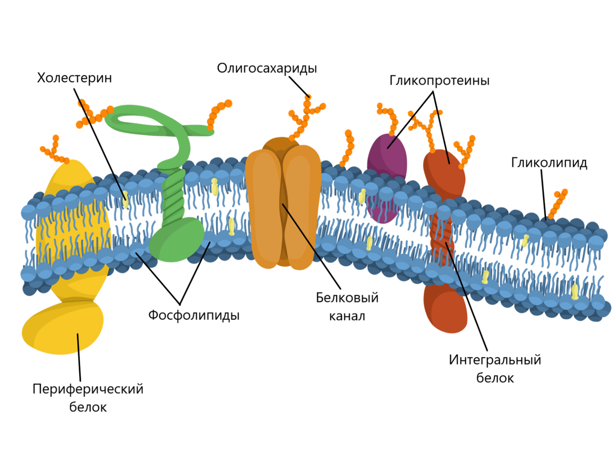
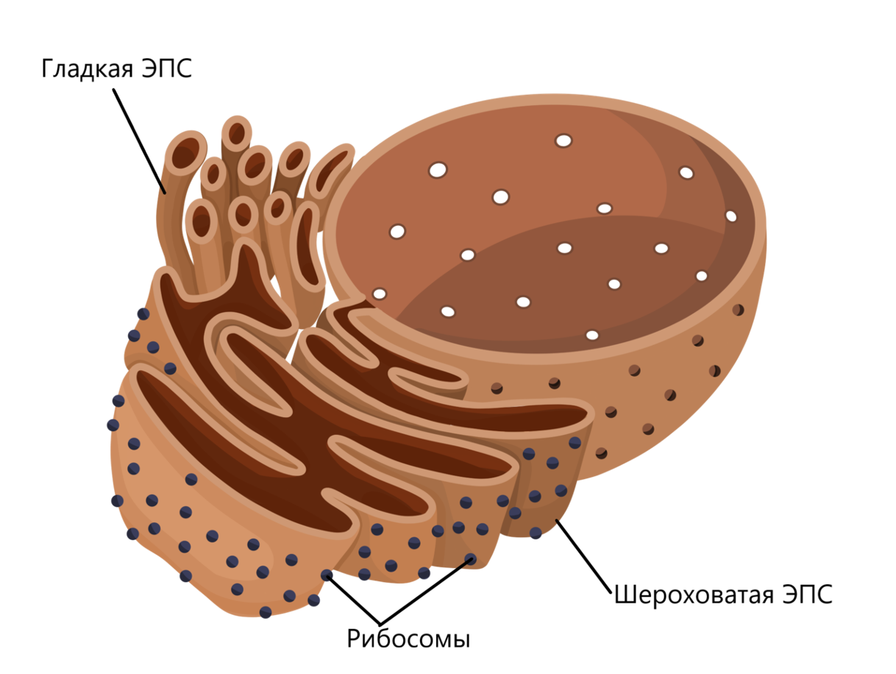
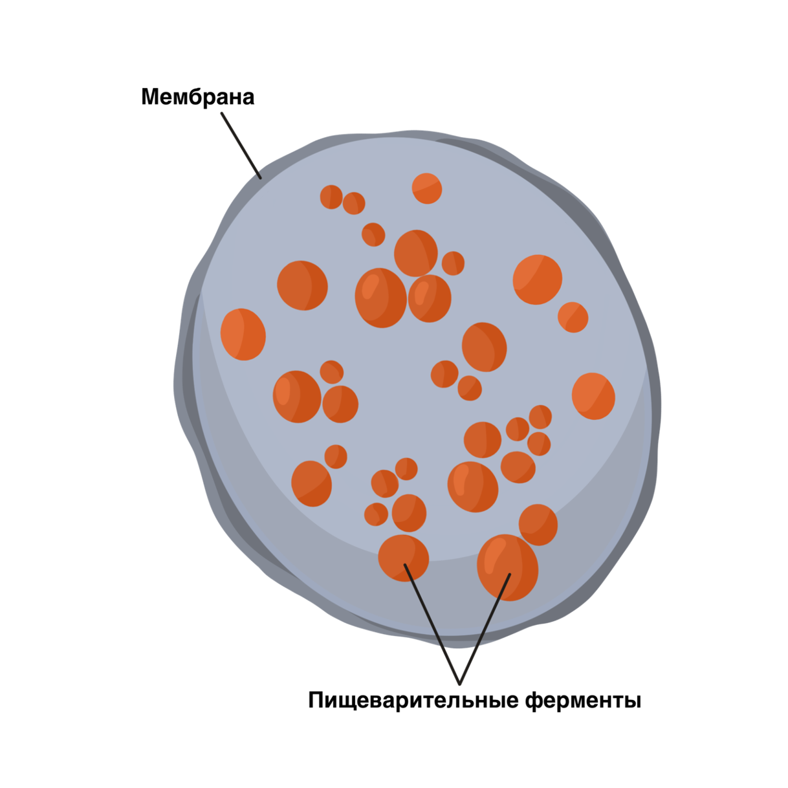

Эукариотическая клетка отличается от прокариотической большими размерами и более сложным строением. Линейные размеры эукариотической клетки обычно составляют десятки мкм (у животных около 10–40 мкм, у растений 100–200 мкм).
Основные структуры эукариотической клетки: цитоплазматическая мембрана, цитоплазма и ядро.
Клетки эукариот содержат множество внутренних структур, выполняющих определенные функции. Эти структуры называются органеллами (органоидами).
Цитоплазма
Цитоплазма — обязательная часть клетки, заключен¬ная между плазматической мембраной и ядром. Цитоплазма объединяет все клеточные структуры и способствует их взаимодействию друг с другом.
Цитоплазма заполнена взвесью частиц и органелл.
Цитозоль (гиалоплазма) — свободная часть цитоплазмы, в которой взвешены органеллы.
По химическому составу цитозоль представляет из себя густой раствор белков, углеводов (глюкозы) и ионов, заполняющий все внутреннее пространство клетки. Концентрации ионов натрия и калия внутри клетки и во внеклеточном пространстве различна, что играет важную роль в осморегуляции и передаче сигнала.
Иногда в клетках некоторых бактерий наблюдаются гранулы каких-либо веществ. Они могут содержать запасные питательные вещества (полисахариды, капли жира, полифосфаты) или отходы обмена веществ, которые клетки не могут вывести наружу (сера, окислы железа и др.). Такие гранулы называются включениями.
У прокариот большинство реакций метаболизма протекает в цитозоле, т. к. нет мембранных органоидов.
У эукариот часть химических реакций протекает в цитозоле, а часть — внутри органоидов.
В животных клетках различают два слоя цитоплазмы:
- эктоплазма — наружный слой цитоплазмы (мало органоидов, высокая вязкость);
- эндоплазма — внутренний слой цитоплазмы (содержит основные органоиды).
В цитоплазме осуществляются все процессы клеточно¬го метаболизма, кроме синтеза нуклеиновых кислот, про¬исходящего в ядре. Под контролем ядра цитоплазма спо¬собна к росту и воспроизведению, при частичном удалении она полностью регенерирует. Цитоплазма, как правило, не способна к длительному автономному существованию.
Циклоз — одно из основных свойств цитоплазмы живой клет¬ки — способность к движению, которое обеспечивает транспорт веществ и связь органоидов.
Ядро
Это крупная органелла около 6–7 мкм диаметром. Оно окружено ядерной оболочкой, которая образована двумя параллельно расположенными мембранами. Ядерная оболочка пронизана ядерными порами, где мембраны смыкаются, и полость ядра сообщается с цитоплазмой. В порах находятся сложные белковые комплексы. Они переносят через оболочку из ядра в цитоплазму крупные молекулы и молекулярные комплексы, такие как мРНК и рибосомы, а из цитоплазмы в ядро — ядерные белки, которые синтезируются в цитоплазме. Внутри ядра находится одно или несколько ядрышек — плотных образований, где происходит синтез рибосомных РНК и сборка субъединиц рибосом. Остальное пространство ядра заполнено полужидкой кариоплазмой, в которой находятся молекулы ДНК, соединенные со специфическими белками, — хроматин.
В процессе клеточного деления нити хроматина укорачиваются и утолщаются, превращаясь в хромосомы. Перед делением хромосомы имеют Х-образную форму. Центральная часть, в которой соединяются две половины хромосомы, носит название центромеры, или первичной перетяжки. Кроме того, в хромосоме выделяются более плотные концевые участки, называемые теломерами. Различные хромосомы отличаются размерами и положением центромер. Для каждого вида живых организмов характерен определенный набор хромосом, который отличается от наборов других видов. Видоспецифичный набор хромосом со всеми их характеристиками называется кариотипом. Клетки могут содержать один набор хромосом или их кратное число. Число хромосомных наборов называется плоидностью. Клетки, содержащие один набор хромосом, называются гаплоидными, содержащие два набора — диплоидными, три набора — триплоидными, четыре набора — тетраплоидными и т. д. Чаще всего мы имеем дело с организмами, состоящими из диплоидных клеток: это животные и большинство растений. Встречаются организмы, построенные из гаплоидных клеток, например мхи. Организмы, в клетках которых более двух наборов хромосом, принято называть полиплоидами.
Плазматическая мембрана
Снаружи эукариотическая клетка, как и прокариотическая, окружена цитоплазматической мембраной. Она выполняет те же функции, что и у прокариот: изолирующую, транспортную и рецепторную. Рецепторная функция у эукариотических клеток развита гораздо сильнее, чем у прокариот, поэтому в цитоплазматической мембране у них гораздо больше белков-рецепторов. У многоклеточных организмов цитоплазматическая мембрана выполняет также функцию межклеточного узнавания и взаимодействия. У растений и грибов снаружи от цитоплазматической мембраны лежит клеточная стенка. У растений она построена на основе целлюлозы, а у грибов — на основе хитина. У животных клеточной стенки нет, но к мембране снаружи прикрепляется довольно толстый слой специфических полисахаридов и белков, называемый гликокаликс. В отличие от клеточной стенки, он эластичен, что позволяет клеткам менять свою форму. В отличие от клеточной стенки, гликокаликс прочно связан с мембраной и не отделяется от нее.
Гликокаликс и его функции
Гликокаликс — углеводная оболочка клетки. Большая часть углеводов мембран представлена не свободными молекулами, а комплексами с другими молекулами: углевод + белок = гликопротеин (большая часть интегральных белков); углевод + липид = гликолипид (1/10 часть липидных молекул мембраны); белок с боковыми углеводными цепями = протеогликан.
Углеводные части мембранных структур почти всегда направлены наружу и выступают над поверхностью клетки.
Функции гликокаликса:
- отталкивание от клетки отрицательно заряженных частиц (т. к. многие углеводные молекулы гликокаликса имеют отрицательный заряд);
- скрепление соседних клеток друг с другом;
- рецепторная функция (связывание гормонов, что приводит к активации определенных мембранных белков, и запускание каскада ферментативных реакций внутри клетки);
- участие в иммунных реакциях.
Все органеллы эукариотической клетки можно условно разделить на три группы:
- Одномембранные, стенка которых образована одной мембраной. К ним относятся эндоплазматическая сеть, аппарат Гольджи, лизосомы, вакуоли, секреторные пузырьки, пероксисомы.
- Двумембранные, стенка которых образована двумя мембранами. Это митохондрии и пластиды (хлоропласты, хромопласты и лейкопласты).
- Немембранные. Это цитоскелет, клеточный центр, рибосомы.
Одномембранные органеллы
Эти органеллы, как предполагается, в ходе эволюции образовались путем впячивания наружной мембраны
внутрь и отпочковывания этих впячиваний. Почти все эти органеллы связаны между собой — прежде всего
системой пузырькового (везикулярного) транспорта, когда пузырьки отпочковываются от одной органеллы
и сливаются с другой, перенося содержимое и компоненты мембраны. Все вместе эти органеллы называются
вакуолярной системой (эндоплазматическая сеть, аппарат Гольджи, лизосомы, вакуоли, секреторные
пузырьки, пероксисомы).
Ядерная оболочка, по сути, тоже является частью вакуолярной системы — одной из цистерн ЭПС,
которая «охватывает» наследственный материал. На наружной мембране часто сидят рибосомы, как и на
шероховатой ЭПС. Внутренняя поверхность внутренней мембраны ядра имеет специфический состав и
взаимодействует с ДНК внутри ядра.
Эндоплазматическая сеть
Внутри эукариотической клетки мы видим сложные мембранные системы, образующие клеточные органеллы. Прежде всего, это эндоплазматическая сеть, или эндоплазматический ретикулум. Он представляет собой систему мембран, образующих соединенные между собой цистерны, полость которых не сообщается с окружающей цитоплазмой. Различают два вида эндоплазматического ретикулума: гладкий и шероховатый. На шероховатом расположены многочисленные гранулы, представляющие собой рибосомы. Они находятся снаружи полости, с цитоплазматической стороны, и синтезируют белки, которые по специальному каналу сразу направляются в полость ретикулума или встраиваются в его мембрану.
На гладком ретикулуме расположены ферменты, синтезирующие мембранные липиды. Таким образом, эндоплазматический ретикулум образует все компоненты, нужные для образования мембран (то есть роста их площади). От эндоплазматического ретикулума отделяются мембранные пузырьки, внутри которых белки, синтезированные на шероховатом ретикулуме, переносятся в следующую органеллу — аппарат, или комплекс, Гольджи.
Аппарат Гольджи
Аппарат, или комплекс, Гольджи — система уплощенных мембранных цистерн, основная функция
которых — сортировка и модификация (прежде всего гликозилирование) белков, направляемых на
экспорт из клетки или встроенных в мембрану.
Каждая группа белков, синтезированных на шероховатом ретикулуме, собирается в определенном
участке на периферии аппарата Гольджи. В этих участках от него отделяются мембранные пузырьки,
часть из которых дает начало клеточным органеллам, таким как лизосомы. Другая направляется к
цитоплазматической мембране, сливается с ней и выделяет свое содержимое наружу. Таким образом
осуществляется секреция из клетки таких белков, как пищеварительные ферменты, гормоны, белки
межклеточного матрикса и гликокаликса.
Лизосомы
Лизосомы представляют собой мембранные пузырьки, внутри которых находятся гидролитические ферменты, расщепляющие белки, жиры, полисахариды. В лизосомах кислая среда (рН 4,5–5,0), что отличает их от других органелл клетки. Эта среда создается действием специального фермента — Н+- АТФазы, перекачивающей протоны из цитоплазмы в лизосомы. Лизосомы выполняют функцию клеточного пищеварения, расщепляя отработавшие компоненты клетки или вещества, поглощенные в результате фагоцитоза и пиноцитоза.
Пероксисомы
Пероксисомы среди одномембранных органелл стоят особняком, т. к. способны делиться самостоятельно,
хотя не содержат ДНК. В них находятся ферменты, катализирующие некоторые окислительно-восстановительные
реакции, в которых участвуют перекиси. Они также играют важную роль в обезвреживании многих
токсичных веществ. Белки, которые находятся в пероксисомах, поступают туда из ЭПС и кодируются
в геноме ядра. На электронных микрофотографиях пероксисом часто можно видеть в них кристаллы ферментов.
Растительная и животная клетка
В растительных клетках существуют некоторые дополнительные органеллы. Это пластиды и крупная центральная вакуоль. В зрелых клетках растений центральная вакуоль занимает значительную часть клетки. Она поддерживает определенное осмотическое давление, служит местом запасания некоторых веществ, например органических кислот, и вывода ненужных веществ, например некоторых ионов, таких как кальций. Пластиды, как и митохондрии, представляют собой двумембранные структуры, имеющие собственные ДНК и рибосомы. Различают зеленые пластиды — хлоропласты, выполняющие функцию фотосинтеза, окрашенные в цвета от красного до желтого хромопласты и бесцветные пластиды — лейкопласты, в которых осуществляется синтез и запасание крахмала.